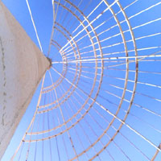
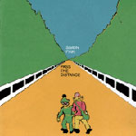
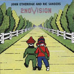
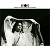
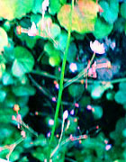
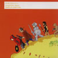
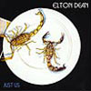
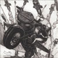
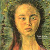

|
 |
#九十九里。 回線復活しました。 相変わらずゆるゆるのまま。 |
| 2004.7 / 2004.10 |
「その導入より2年弱が経過した現時点において、導入前に比べますと、著作権保護に対して、多くの音楽ユーザーの意識が高まり、一時の混乱期を脱したと判断されるとともに、法的環境の整備も進んできました。」って、何にも変わってないような気がするんですけど。CCCD諦めたってよりは、別の方法で儲けられるように方針変えただけかなーと思います。
|
2004/9/25 4-D @ 大岡山Peak-I（小西健司+横川理彦+成田忍） live-4D-mode1-040925.mp4 (254MB) 2004/9/23 Unrecovered Smile Addict @ 大阪Club Noon（小西健司+伊藤浩次+三島和樹） live-u-s-a-040923.mp4 (101MB) |
 |
 |
| Simon Finn/Pass The Distance | 2nd Vision/First Steps |

#久々にCDたくさん（っても6枚だけど）買いました。
#えーと、なんだか最近調子が悪くて、鼻炎の薬飲んだら死ぬほど眠くてててててててて・・・・もう。| Bjork/medulla 声だけで作られたアルバム。ビョークはどこまで行くつもりなんだろう？ Homogenic辺りからスゴイなぁと思ってたんですけど、こんなアバンギャルドなモノがタワレコ山積みで沢山売れてくってのが凄いなって。 強い音だなーって思います。とても。 |
|
| Orbital/Blue Album テクノを聴くようになったきっかけの人たちでした。ラストアルバム。 何か悲しくなってくるなぁ。 |
|
 |
Rubyorla/Samplin Somethin タワレコに3回行って3回試聴して、やっぱりイイなと思って買ってきました。 関西系？のヒップホップ？の人です。オールタイチとか参加してます。不愉快なまでにポップ。 |
| Lindsay Cooper/Oh Moscow Lindsay Cooperのライヴ録音盤。今ではONJQに入ってしまったAlfred Harth参加、あとHugh Hopperも参加。 良くもなく悪くもなく、ちょっと盛り上がりに欠けるかな？ |
|
 |
Elton Dean/Just Us soft machineのsax奏者の1973年。softs在籍時の音源、softsの「５」辺りの音とセットでもイイかも。 |
 |
美狂乱/魁!!クロマティ高校 Original Soundtrack 2 コレがサントラか・・・・ありえねー。 ボーナストラックは美狂乱の昔のライヴ音源です。コレがまた凄い、凄いのですけどプログレファン以外でこのサントラ買う人がどれだけいるのかと。 |
| イノトモ/夢 |
|
 |
Takana Miyamoto/Tree Songs コレは元PHATの藤原大輔さんのバンドを見たとき参加してた方のCDです。 アメリカで活躍されてるJAZZ～現代音楽のピアノの人みたいです。「あ～日本人だなぁ」なんて思うよーな、馴染みの有るコード感が素敵でした。 |